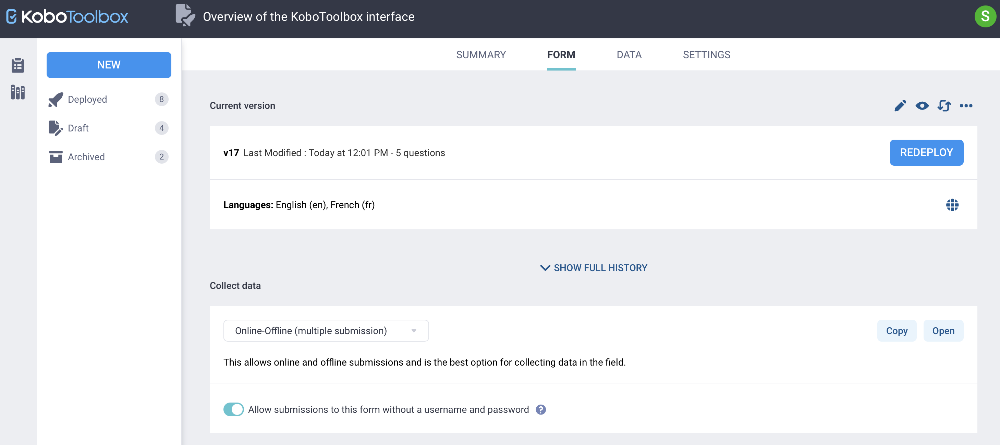

What do you need help with?
Search the knowledge base, browse our resources, and visit our forum for more detailed information
Search the knowledge base, browse our resources, and visit our forum for more detailed information
Last updated: 6 Apr 2022
As illustrated in the support article, Grouping Questions and Repeating Groups, you can use repeating groups to fulfil certain survey requirements. You may also need to analyze data from the repeat groups that were collected. When downloading the data from the server (in XLS format), you should see the data in the following structure:

The first sheet with the sheet name Repeat Group (Merge) seen in the image above holds the individual data from the survey while the second sheet with the sheet name CR holds the roster data.
For downloaded datasets, you should have one sheet more than the number of repeat groups. For example, if you had one repeat group included in the survey form, you should have two sheets in your dataset.
This support article will also illustrate the difference between individual data and roster data. It will then show the steps for how to merge them into a single dataset through Power Query in Excel.
Merging individual data and roster data through the system is currently not available but it is possible through Power Query in Excel. Excel was chosen over other software because it is a widely used spreadsheet and available to almost all PCs. It is also relatively easy-to-use.
Individual data are information that are generally captured only once in an interview. Roster data, on the other hand, are captured more than once (e.g., details of all family members living within a household) from within the same individual in an interview. The number of cases in individual data may equal to roster data but can never exceed it, while the number of cases in roster data generally exceeds the individual data but sometimes may be equal (but never less).
A filled-up survey form, as shown below, should show in a picture the differences between individual data and roster data. Please note, all data used in this support article are hypothetical.

Any data that is collected outside the repeat group is individual data and any data that is collected inside a repeat group is roster data.
Data downloaded in XLS format should also show the difference between individual data and roster data.
Each record (as shown in the image below), under Name of the household head,
Sex of the household head, Total family members in the household, and
Total school going children (aged 6-16 years) in the household from the first
sheet Repeat Group (Merge) is individual data.

This example dataset has a total of 7 interviews as its individual data.
Similarly, each record (as shown in the image below), under Name of child,
Age of child, and Sex of child from the second sheet, CR, is roster
data.

So, this example sample dataset has a total of 12 records as its roster data.
Note: While downloading a dataset from the server, you should also be able to see other variables (metadata variables) if they have not been filtered out. They have been removed from this example dataset for simplicity.
If you look closely at the images shared above, you can see _index column with
value “1” in the first sheet Repeat Group (Merge). Similarly, there is also
a _parent_index column with value “1” in the second sheet CR. _index and
_parent_index are additional variables created by the system to manage repeat
groups. They are matching variables needed to merge individual data and
roster data together into one.
Below are two approaches to merge individual data and roster data into a single dataset through Power Query in Excel. You can use any of the following approaches:
For the first approach, you must have opened your XLS dataset. For details, please see the video below:
Open the dataset that has both the individual data and roster data.
Select all data from the first sheet (individual data).
Under the Data tab, select From Table/Range.
A dialogue box (Create Table) will pop-up. Select OK.
Select the Close & Load icon that is located at the top left corner of the screen. You should now see two dropdown options: Close & Load and Close & Load To ….
Select Close & Load To ….
A dialogue box (Import Data) will pop-up. Select Only Create Connection and then press OK.
You have now created a query table for the (individual data).
You can now go to the second sheet, (roster data), and follow the exact steps you have performed above.
With this you have created a query table for the (roster data).
Under the Data tab, select Get Data. From there, select Combine Queries and then Merge.
A dialogue box Merge is seen.
Load both the query tables. Once both the tables are loaded, select the
matching variable _index from the first table. Similarly, select the
matching variable _parent_index from the second table. As soon as you
select both the matching variables you should be able to see The selection
matches … of … rows from the first table. The query table should now be
merged.
To expand the merged table, check all the variables that you wish to have in the merged dataset. You can also uncheck Use original column name as prefix to have the original variable name in the merged dataset. When everything is done, select OK.
You should now have the final merged dataset.
Once again, select the Close & Load icon that is located at the top left corner of the screen. You should see two dropdown options: Close & Load and Close & Load To ….
Select Close & Load. With this final click you have merged your individual data and roster data into a single dataset.
Use the second approach when you have not yet opened your XLS dataset and only have opened your new Excel workbook. For details, please see the video below:
Open a new Excel workbook.
Under the Data tab, select Get Data. From there select From File and then From Workbook.
Search the file from your PC. Once you see it, select the file and then press Import.
A dialogue box Navigator is seen. Here, check Select multiple items and the sheet names CR and Repeat Group (Merge) that are visible. Once they are checked the Load button at the bottom of the dialogue box gets activated.
Select the Load button. You should see two dropdown options: Load and Load To …. Select Load.
With this, you have created query tables for the (individual data) and the (roster data).
Under the Data tab, select Get Data. From there, select Combine Queries and then select Merge.
A dialogue box Merge is seen.
Load both the query tables. Once both the tables are loaded, select the
matching variable _index from the first table. Similarly, select the
matching variable _parent_index from the second table. As soon as you
select both the matching variables you should be able to see The selection
matches … of … rows from the first table. The query table should now be
merged.
To expand the merged table, check all the variables that you wish to have in the merged dataset. You can also uncheck Use original column name as prefix to have the original variable name in the merged dataset. When everything is done, select OK.
You should now have the final merged dataset.
Once again, select the Close & Load icon that is located at the top left corner of the screen. You should see two dropdown options: Close & Load and Close & Load To ….
Select Close & Load. With this final click you have merged your individual data and roster data into a single dataset.
The differences in the two approaches are with loading the query table. Once the query tables are loaded, you will need to follow the same steps to merge the individual data and roster data.
Exporting repeat groups is not supported in CSV format. You will need to download the data in XLS format.
Microsoft Power Query for Excel is an Excel add-on. You can download it through this Microsoft download site. It should work best on Excel for Microsoft 365 or Excel 2021, Excel 2019, Excel 2016, Excel 2013, and Excel 2010. For more details, please check out the Microsoft support site.
For practice, you can access the XLSForm here and the example sample dataset here that were used in this article.
Did you find what you were looking for? Was the information clear? Was anything missing?
Share your feedback to help us improve this article!